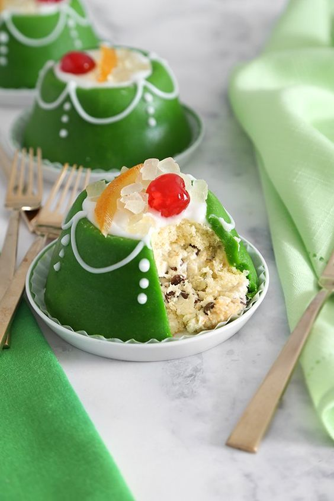
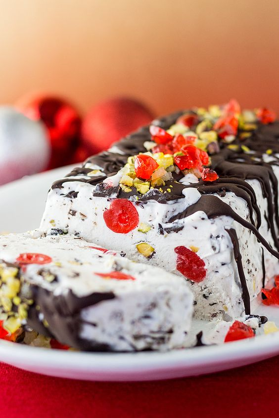
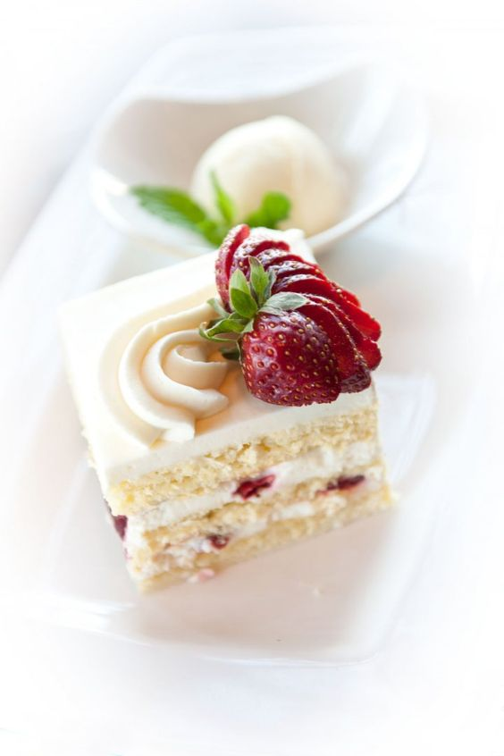

Desserts menu
We have many types of desserts
We’ve all experienced that unmistakable craving for sweets. One minute, you’re just going about your business doing the dishes or reading the paper, and then BAM, you’re suddenly craving something decadent and delicious. If you ever find yourself craving something sweet but can’t really pinpoint the exact dessert you’re in the mood for, it might be a good idea to take a look at the options. Have you tried everything desserts have to offer? Do you think there might be a dessert you haven’t yet tasted?
Choose what you like
Molten Chocolate Cake
The dessert merges together elements of a soufflé and a flourless cake, and with a list of ingredients that includes only butter, eggs, sugar, and chocolate, it’s the timing that’s of crucial importance - you just have to catch the right moment when to invert it from its single-portion ramekin onto a plate.


Cassata
This is traditionally a winter and spring specialty, and it is most often served around Easter. It’s usually chilled for 3 hours before serving. By the 14th century, cassata had become a dessert of the aristocracy, and even today, few people outside of the culinary world are brave enough to prepare this elaborate delicacy at home.
  Bavarian Cream
This rich, silky egg custard is thickened with gelatin and combined with whipped cream. It is traditionally served cold, and is usually garnished with pieces of fresh fruit or drizzled over with sweet sauces. Although its origins are quite unclear, it is known that Bavarian cream hails from either Germany or France.


Schwarzwälder Kirschtorte
Black Forest cherry cake is a popular German dessert consisting of chocolate sponges that are coated in whipped cream and dotted with kirschwasser-infused cherries. Some varieties use the kirschwasser brandy to soak the chocolate layers or to lightly flavor the whipped cream.


Pancakes with Maple Syrup
Pancakes are traditionally consumed across North America and Canada, made from a starchy batter, eggs, milk, and butter. Their origin is probably German, with the traditional Pfannkuchen recipe being brought by German immigrants who settled in the United States in the eighteenth and nineteenth centuries.


Gelato cioccolato
Cioccolato is a variety of Italian gelato that is prepared with chocolate and cocoa powder as the key ingredients alongside cream, sugar, and milk. The final product, if made properly and churned at low speed, should have a dense and velvety texture, and a rich, dark brown color.